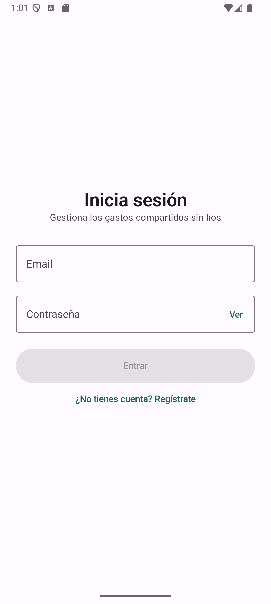
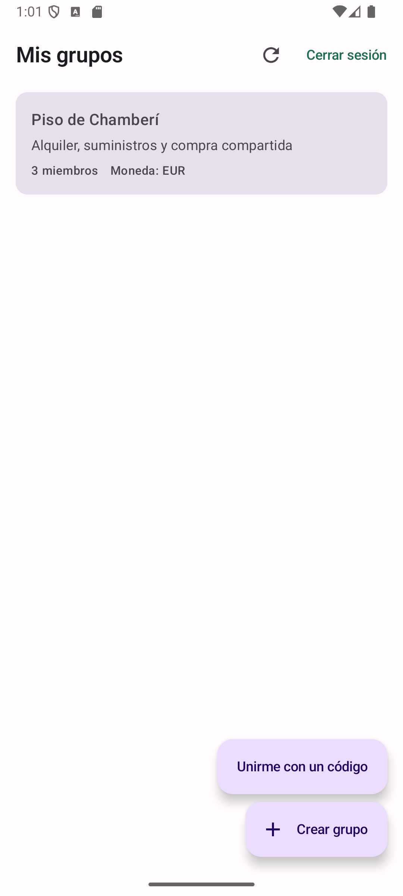
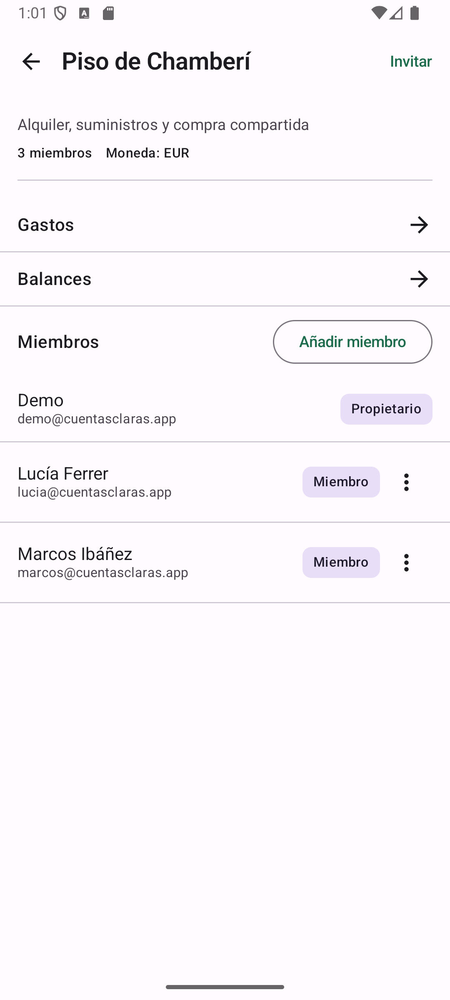
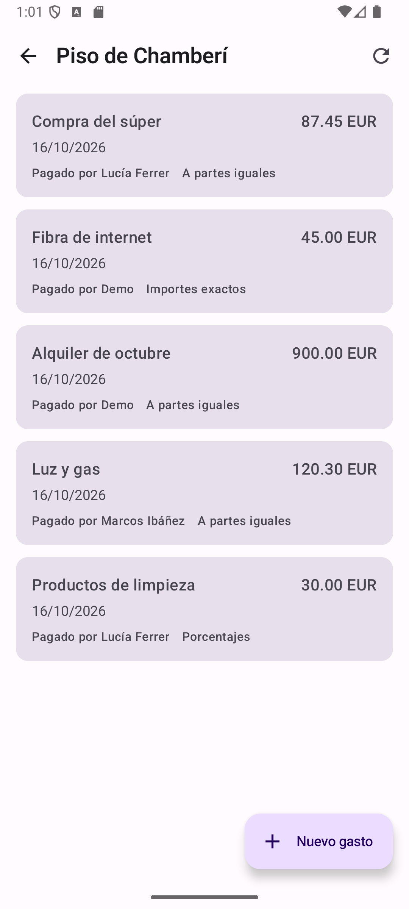
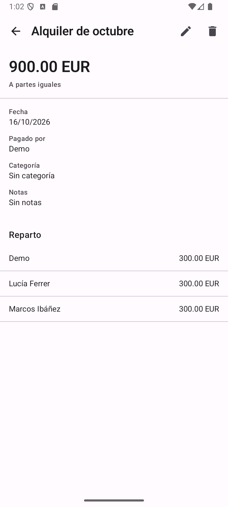
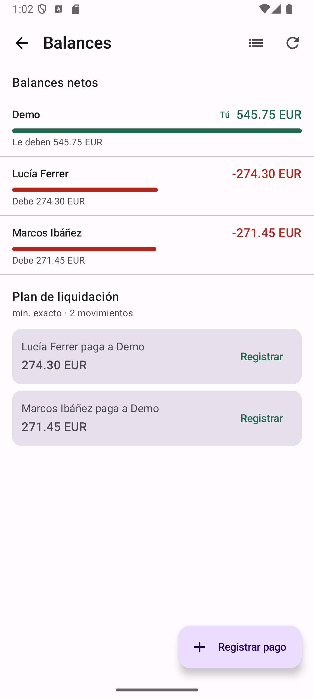

CuentasClaras
App de gastos compartidos: grupos, reparto flexible, balances y liquidación con el mínimo número de transferencias.
- Kotlin
- Jetpack Compose
- Hilt
- Room
- WorkManager
- Spring Boot
- PostgreSQL
- Flyway
- OpenAPI
- Testcontainers
El problema
Repartir los gastos de un piso compartido parece trivial y no lo es. Hay que saber quién pagó cada cosa, decidir si un gasto va a partes iguales, por importes exactos o por porcentajes, permitir apuntar algo en el metro sin cobertura y, al cerrar el mes, cuadrar las cuentas sin una ronda interminable de transferencias.
El enemigo silencioso son los céntimos. Casi todas las apps del sector convierten el dinero a coma flotante, y entonces 10 € entre 3 deja de sumar 10 €. Aquí, si las cuentas no cuadran al céntimo, la app está mal.
Cómo lo resolví
- El dinero se guarda siempre en enteros (céntimos) y nunca pasa por coma flotante. El reparto calcula las partes y reparte el resto céntimo a céntimo, de forma que la suma de las partes es exactamente el total.
- El cliente Android es offline-first: cada escritura se aplica primero en local (Room), se encola en una tabla outbox y un SyncWorker la envía al servidor. Los envíos llevan identificador propio, así que repetir uno no duplica el gasto.
- La API es un servicio Spring Boot con JWT (token de acceso y refresh rotativo), migraciones Flyway y PostgreSQL. El contrato vive en un openapi.yaml versionado en el repositorio, y los tests de integración levantan un PostgreSQL real con Testcontainers.
- La pantalla de balances muestra el saldo neto de cada miembro y propone un plan de liquidación: la lista más corta de pagos que deja todas las cuentas a cero.
Capturas
La interfaz de la app está en español. Estas capturas salen de una compilación de desarrollo con datos de ejemplo.
-

AccesoInicio de sesión con email y contraseña. -

Mis gruposLos grupos del usuario, con miembros y moneda. -

El grupoMiembros con su rol y accesos a gastos y balances. -

GastosCada gasto con importe, fecha, quién pagó y cómo se reparte. -

Detalle del gasto900,00 € a partes iguales: 300,00 € por cabeza. -

BalancesSaldo neto por persona y plan de liquidación.
Decisiones que sostienen el resto
- Dinero en enteros, siempre
- Guardar céntimos evita los errores de redondeo. El reparto reparte el resto unidad a unidad, así que la suma de las partes coincide con el total y no hay céntimos huérfanos.
- Un único contrato de API
- El openapi.yaml es la referencia: la app, los tests y la documentación miran al mismo fichero. Si el contrato cambia, se ve en la revisión.
- La red es un detalle, no un requisito
- La interfaz nunca espera a una petición: escribe en local y responde al instante. La sincronización es un proceso de fondo que se puede reintentar sin miedo.
- Reintentos idempotentes
- Cada operación encolada lleva su propio identificador. Si el envío se repite —porque se perdió la respuesta—, el servidor reconoce la operación y no la duplica.
Lo que haría después
- Notificaciones cuando alguien apunta un gasto en un grupo compartido.
- Exportar el histórico de un grupo a CSV para quien quiera revisarlo fuera de la app.
- Una segunda pasada de accesibilidad sobre las tablas de reparto, que es la pantalla con más datos por fila.